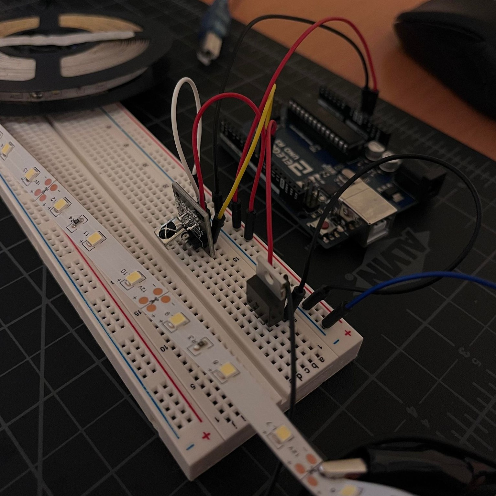

Yikes, wall power.
The resistor on each LED strip chunk is marked 181 (18 * 10 = 180Ω)
Total 9.9V drop from 3 white LEDs in series, and the power supply supplies 12V, so there's a 2.1V drop across the integrated resistor
(12V - 9.9V) / 180Ω = 0.0117A = 11.7mA -> current draw from 1 segment of 3 LEDs
The LED strip has 300 LEDs, so 0.0117A * 100 = 1.17A from the whole strip.
Since the transistor is in series with the LED strip, this is also subsequently the amount of current flowing through the transistor.
According to the datasheet, the drain current of the transistor is 32A, which is far above the current drawn from the strip, so it was fine there.
And I think there's not really much of a voltage drop across the transistor, since it's mostly just controlling current flow.
Pin 9 is connected to the IR sensor and Pin 10 is connected to the transistor gate.
The external power supply isn't pictured because of the wild amount of alligator clips and wires -
But it's connected to the LED strip and the ground is connected to the ground of the Arduino.
// Initializing the IRremote library
#include <IRremote.hpp>
// Variable for the IR receiver signal pin
int receivePin = 9;
// Variable for transistor control pin
int transistorPin = 10;
// Variable for LED strip brightness
int brightness = 0;
// Variable for rate of LED fade
int fadeRate = 2;
// Setup code that runs one time
void setup() {
// Starting 9600 baud serial to check IR inputs
Serial.begin(9600);
// Starting the IR receiver on the pin set earlier, LED feedback enabled
IrReceiver.begin(receivePin, ENABLE_LED_FEEDBACK);
// Setting the transistor pin to output, it's in a low-impedance state
pinMode(transistorPin, OUTPUT);
}
// Loop code to run forever
void loop() {
// Code essentially from the Arduino Fade example
// Set brightness of the LED strip
analogWrite(transistorPin, brightness);
// Change the brightness for next time through the loop:
brightness = brightness + fadeRate;
// If the brightness is at the ends of the fade
if (brightness <= 0 || brightness >= 255) {
// Then flip the direction of the fade
fadeRate = -fadeRate;
}
// Waiting 30 milliseconds so you can actually see the fade
delay(30);
// If the receiver receives something
if (IrReceiver.decode()) {
// Prints the decoded IR command to serial port
// Mostly just used this for figuring out what the codes were when I pressed the remote buttons
Serial.println(IrReceiver.decodedIRData.decodedRawData, HEX);
// If the IR command received is the code for down
if (IrReceiver.decodedIRData.decodedRawData == 0xF807FF00) {
// Decrement the rate of the fade by 2
fadeRate -= 2;
}
// If the IR command received is the code for up
if (IrReceiver.decodedIRData.decodedRawData == 0xF609FF00) {
// Increment the rate of the fade by 2
fadeRate += 2;
}
// If the rate of the fade goes above 10
if (fadeRate > 10) {
// Limit the fade rate to 10
fadeRate = 10;
}
// If the rate of the fade goes below 0
if (fadeRate < 0) {
// Limit the fade rate to 0
fadeRate = 0;
}
// Used to check the fade rate on the serial monitor
Serial.println(fadeRate);
// Enables receiving of the next IR input (so it doesn't get overloaded)
IrReceiver.resume();
}
}

GIF is short for capacity sake, but the fade gets slower when the down button is pressed.
It subsequently fades faster when the up button is pressed (but not pictured)